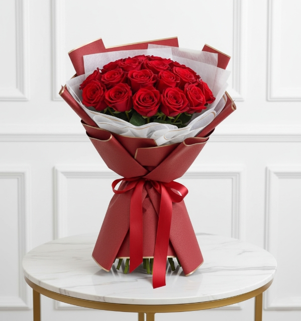
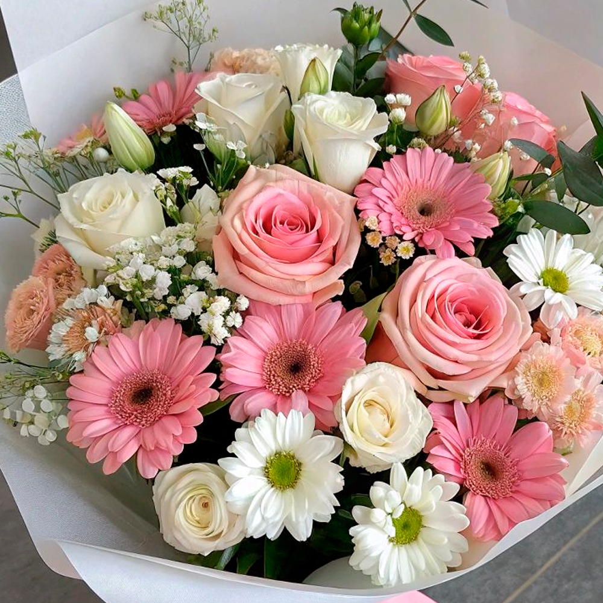
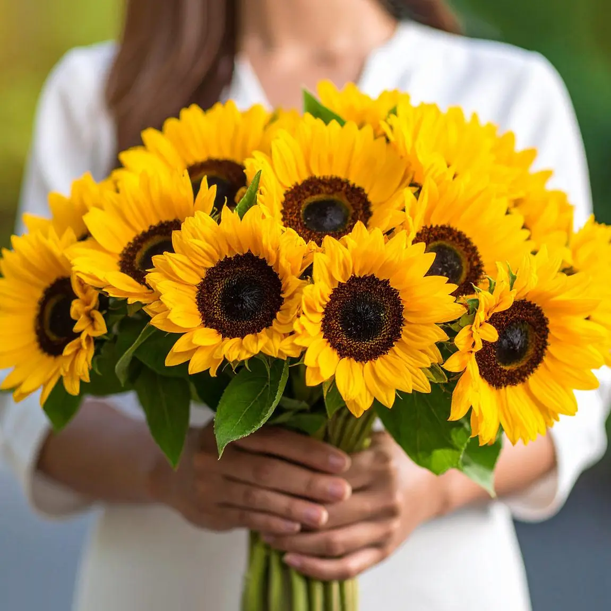
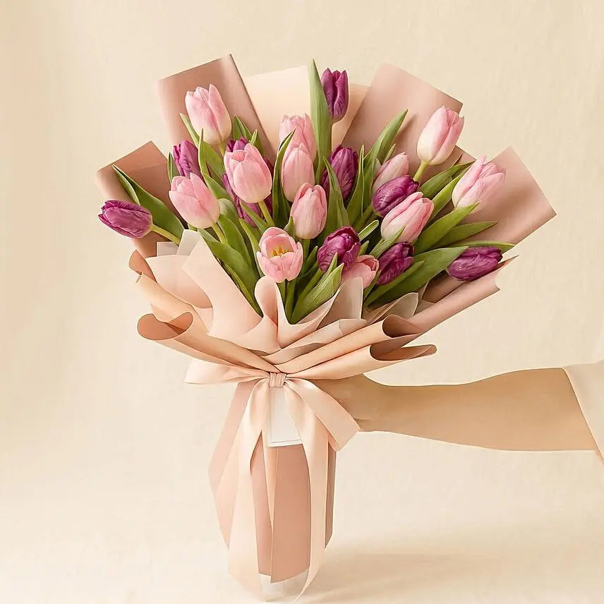

Ramo romántico
Una composición inspirada en el amor y la cercanía. Las rosas rojas son una opción tradicional, y se pueden combinar con follaje y un envoltorio sencillo.
RAMO RESUELTO
Encuentra una idea que combine con lo que quieres expresar.
IDEAS PARA REGALAR
Cada arreglo puede tener un estilo distinto algunos transmiten romanticismo otros alegría y algunos son perfectos para agradecer o celebrar un logro estas propuestas son ideas de diseño que puedes adaptar a los gustos de la persona que recibirá las flores.

Una composición inspirada en el amor y la cercanía. Las rosas rojas son una opción tradicional, y se pueden combinar con follaje y un envoltorio sencillo.

Combina flores de diferentes colores para crear un regalo alegre. Puedes elegir tonos pastel para un estilo delicado o colores vivos para una presentación más llamativa.

Los tonos amarillos aportan luminosidad y una sensación de alegría. Es una propuesta para acompañar buenos deseos o celebrar un logro.

Los tulipanes permiten crear arreglos elegantes y sencillos. Puedes elegir un solo color para una apariencia uniforme o mezclar varios tonos.
Una propuesta sencilla y fresca. Las margaritas pueden combinarse con flores blancas y follaje para crear un arreglo ligero y natural.
Las orquídeas pueden ser el centro de un arreglo de estilo elegante. Una presentación sencilla permite destacar su forma y sus colores.
Las gerberas de varios colores permiten crear un arreglo llamativo y lleno de energía. Puedes combinar tonos parecidos o elegir una mezcla de colores para darle personalidad.
Una combinación de flores suaves y colores armoniosos puede transmitir reconocimiento y cariño. Lo importante es acompañar el arreglo con un mensaje personal.